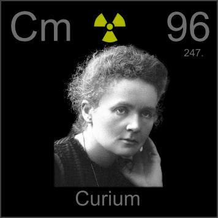

HOME
PREVIOUS
NEXT

Curium
Atomic Weight: 247[note]
Density: 13.51 g/cm3
Melting Point: 1345 °C
Boiling Point: 3110 °C
Curium is named after Marie and Pierre Curie, who discovered radium and polonium, but not curium. It has some specialized applications in research, but is not generally available outside a few institutions.